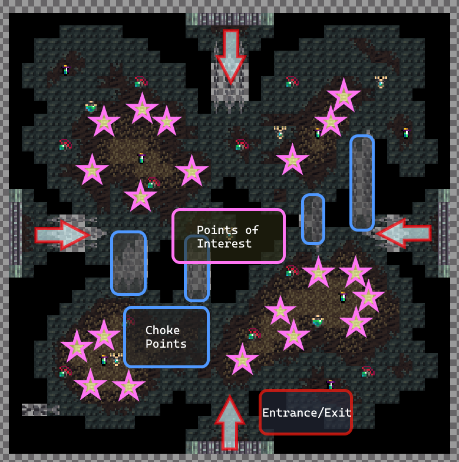
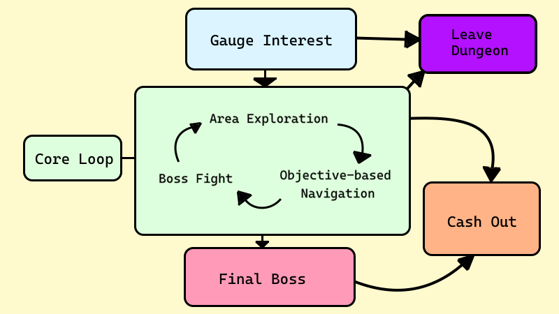

Realm of the Mad God is a co-op, top-down 2D, rogue-like bullet hell MMORPG with permadeath.
What I Accomplished:
- Developed a full-length endgame difficulty level from scratch as part of the User-Generated Content program, including multiple new bosses, enemies, and items.
- Worked with the design team to provide additional boss and enemy content to major updates.
- Currently train and assist new members of the User-Generated content team with designing content and becoming more familiar with the development tools.
- Provided specs for new scripting functions that are used within the official design team.
- Participated in discussions and planning with the official design team to spec out content for future updates.
- Participated in weekly closed testing sessions as part of the game's Closed Testing program, involving providing detailed bug reports and reproduction steps.
Example of RotMG's chaotic, fast-paced multiplayer combat
Realm of the Mad God (RotMG) is a massively-multiplayer perma-death RPG and also a bullet hell shooter. You play as a hero of the realm, slaying monsters and crawling dungeons to eventually defeat the Mad God Oryx-- as the game's title suggests-- ad infinitum.
The twist is that in contrast to many similarly-themed MMORPGs, RotMG's combat borrows from the often insanely difficult bullet hell games such as Touhou to make moment-to-moment interactions intense and immediately impactful. The game's unique position as a genre mashup between a handful of very different types of games also makes it uniquely difficult to design content for.
Working on Realm of the Mad God has taught me a lot about the value of knowing how your tools work and how you can leverage creativity to compensate for a more limited development toolkit.
I would consider the Spectral Penitentiary to be my capstone project. It was developed entirely from scratch within the course of 2 years, and I encountered many unique challenges that forced me to come up with creative solutions.
My design goals for this project were to:
- Provide a uniquely non-linear gameplay experience by randomly distributing objectives throughout the level
- Build a level that bypasses the limitations of the game's level-generation
- Utilize the game's roguelike aspects to better sustain an infinitely replayable experience, reducing burnout on repeated play
- Foster higher-paced interactions to engage players at a more streamlined pace
- Apply adaptive difficulty scaling to accomodate for a wider range of player skill levels
Procedural generation is a commonly used feature in rogue-like games in order to increase the replay value and scalability of game content through semi-randomized level generation. Unfortunately, RotMG's implementation lacks a crucial element that helps tie these sorts of systems together-- loops!
Loops are crucial to invoking a sense of meaningful navigation, allowing both extra ways to path towards a destination and giving more freedom to explore. Years of experience within the game's development sphere have made it abundantly clear that this omission in dungeon generation mostly punishes players for going the wrong direction, and a lack of available backtracking tools exacerbates this problem.

Example of a dungeon's map generation. Notably, loops do not spawn.
Spectral Penitentiary's map layout, mainly composed of loops.
System Design - Creating Non-Linearity
I spent a very long time trying to find a workaround to this issue that played within the constraints of the dungeon generation algorithm. After a certain point however, I decided that the only way I was going to bypass this problem was to view it in the same way that I had originally approached it-- forcing the loops into existence and making my own dungeon generation algorithm.
Most of the following process involved me improvising a method of randomly generating room layouts in predetermined locations, utilizing the existing scripting tools. I had to manually implement multiple different randomization features that the game's original algorithm would have automatically done, but writing the functions myself allowed me much greater control over smaller gameplay tweaks. Through a lot of iteration I was able to create the non-linear experience I had originally wanted, but it came with several concessions.
Level Design - Backed Into 4 Corners
One of the most challenging parts of the design process was made apparent through the restrictions of pre-generated room dimensions. Every single room that I created needed to be an exact size, be accessible from all four cardinal directions, and still provide enough variety so you don't feel like you're encountering the same room more than once.
In total, the dungeon has over 50 different unique room types! Needless to say, it was extremely exhausting, but I still found myself wishing I had chosen larger room dimensions. To avoid the homogenization of room layouts within my constraints however, I needed diversify the available challenges in each room.
One of the solutions that I utilized was to make multiple branches of the dungeon. After entering, you are offered two out of the four possible branches of the dungeon. This extra degree of randomness allowed me to save resources on unique room layouts by providing different challenges based on the theme of their respective branch.
This served two important purposes. The first of which was allowing me to utilize zone-specific mechanics to influence player pathing rather than rely entirely on the tile layouts. The second of which involved reimagining the classic dungeon gameplay loop to accomodate for a wider range of player archetypes.
One of the Prison Cell rooms, featuring multiple PoIs and unlockable zones that open up the available traversal space.
One of the Courtyard rooms, featuring a main set of lower-value PoIs separated by several choke points.
A classic dungeon's linear gameplay progression.
The dungeon's gameplay loop. Allowing players to cash out at differing intervals reduces commitment and accomodates for different durations and intensity of play.
System Design - Building for Accessibility
In most typical MMORPGs, endgame content usually consists of high-duration and high-commitment activities. While this is definitely something that endgame players want (or begrudgingly deal with), my dungeon was built with the idea that the content should be accessible to a wide array of player duration and commitment levels. This required me to adopt a different gameplay loop as opposed to much of the game's content.
Contrary to the linear progression of the classic dungeon loop, Spectral Penitentiary provides a more varied and rewarding gameplay loop by lowering necessary commitment and utilizing a prolonged reward pacing.
Providing multiple different ways to play through content was a necessary consideration in my opinion. After all, I think that it would be a waste of development time to not take advantage of adaptive content.
A Brief Retrospective
Overall, this project emerged as a fairly large technical achievment, although the massive initial scope led to this project lasting a lot longer than I had anticipated (2 years!). I learned a lot through trial and error, especially since there was a lack of documentation at the time I started learning how to work with the limited tools. My work didn't come without regrets though, and I wish that I utilized more opportunities to get feedback on the intuitiveness of some mechanics, as I noticed that the visual communication of certain elements were seen as completely arbitray information rather than useful.
At the end of the day, players seemed to love it though. In my book, I'd call that a success.